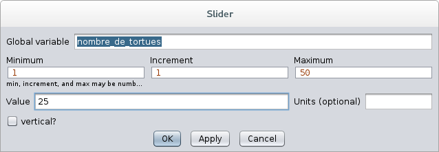
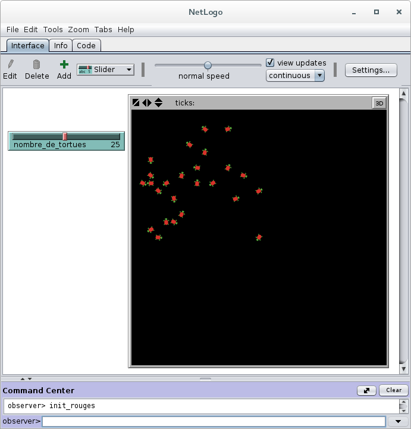
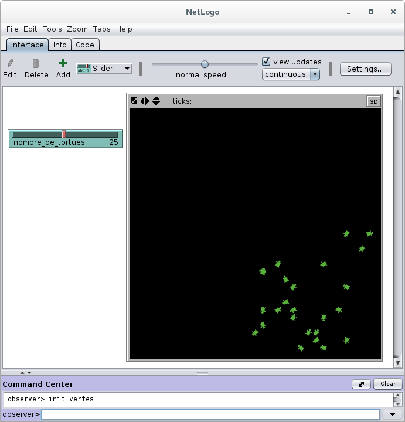
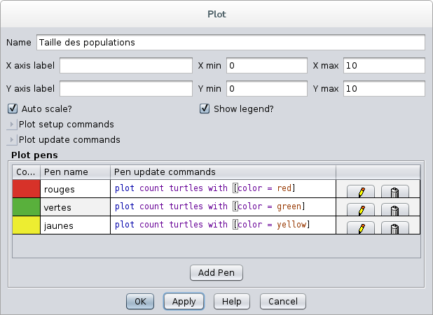
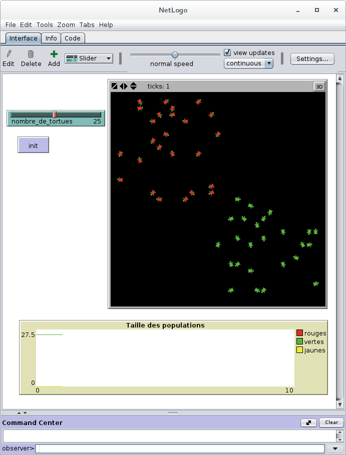
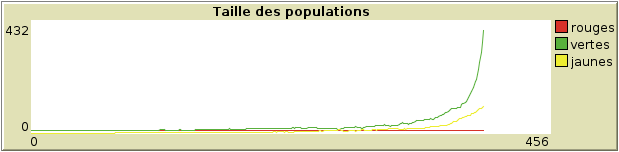
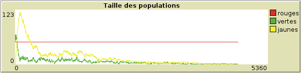

Dissémination d'une maladie en Netlogo Laboratoire V
Hector Satizabal
Julien Rebetez
I. Objectif
Dans ce laboratire vous devez programmer deux populations de tortues simulant la dissémination d'une maladie: des tortues vertes qui sont saines, et des tortues rouges qui sont aussi saines mais qui portent un virus mortel. La maladie se transmet par contacte entre le tortues rouges et les tortues vertes. Les tortues vertes qui developpent la maladie deviennent jaunes. Elles peuvent laisser le virus dans l'environnement et meurent après un certain temps.
II. Critères d'évaluation
Envoyez le fichier .nlogo (pas de fichier texte ou de document word !) par email à julien.rebetez@heig-vd.ch.
- Pas d'erreur de syntaxe
- Utilisation de bouton(s) pour initialiser l'environnement et lancer la simulation
- Utilisation d'une boucle while pour la boucle principale
- Respecter les indications ci-dessous
- La quatrième partie ne rentre pas dans l'évaluation
III. Exercice
Première partie
- Créer un slider pour définir la taille de la population de tortues de chaque couleur. Le slider doit créer la variable globale "nombre_de_tortues" que vous devez utiliser ensuite

- Programmer une procedure pour créer une population de taille "nombre_de_tortues", coloriez-les en rouge et placez-les dans la partie supérieure gauche de l'environnement

- Programmer une procedure pour créer une population de taille "nombre_de_tortues", coloriez-les en vert et placez-les dans la partie inférieure droite de l'environnement

- Créer un plot qui montre l'évolution des deux populations

- Créer un bouton pour initiliser l'environnement (effacer tout, placer les deux types de tortues)

Deuxième partie
- Programmer les tortues de la manière suivante
- Les tortues doivent avancer de manière aléatoire (pas de sauts, utilisez fd 1)
- Dès qu'une tortue rouge (portant la maladie) se trouve à la même place qu'une tortue verte, cette dernière devient jaune (elle développe la maladie)
- Les tortues jaunes continuent à bouger aléatoirement et elles changent la couleur de l'environnement en jaune avec une probabilité de 5% (elle laissent le virus sur l'environnement)
- Si une tortue passe par un patch jaune elle mange le patch (le patch redevient noir)
- Si une tortue verte mange un patch jaune elle développe la maladie avec une probabilité de 75% (elle devient jaune)
- Les tortues malades (jaunes) meurent après une periode de durée aéatoire qui va entre 100 et 200 iterations
- Si deux tortues vertes se retrouvent dans un même patch qui n'est pas jaune, elles donnent naissance à une nouvelle tortue verte avec une probabilité de 50%. La nouvelle tortue doit être placée à une position aléatoire de l'environnement
- Programmer un bouton pour lancer la simulation
- La simulation doit s'arrêter s'il ne reste que des tortues rouges dans l'environnement, ou si le nombre de tortues est trop grand (> 500)
Troisième partie
- Modifier le code pour que des patches bleu répresentant un médicament miraculeux aparaisent toute les 10 iterations avec une probabilité de 1%
- Si une tortue pase par un patch bleu elle le mange
- Si une tortue malade (jaune) mange le médicament elle guérie et redevient une tortue saine (verte)
Quatrième partie
- Tester le code avec plusiers tailles de population. Par exemple avec 10, 20, 30, 40 et 50 tortues
- Jusqu'à quelle taille de population l'on obtient une sur-population des tortues malades?

- À partir de quelle taille de population l'on obtient une extinction des tortues saines?

HEIG-VD, 2015